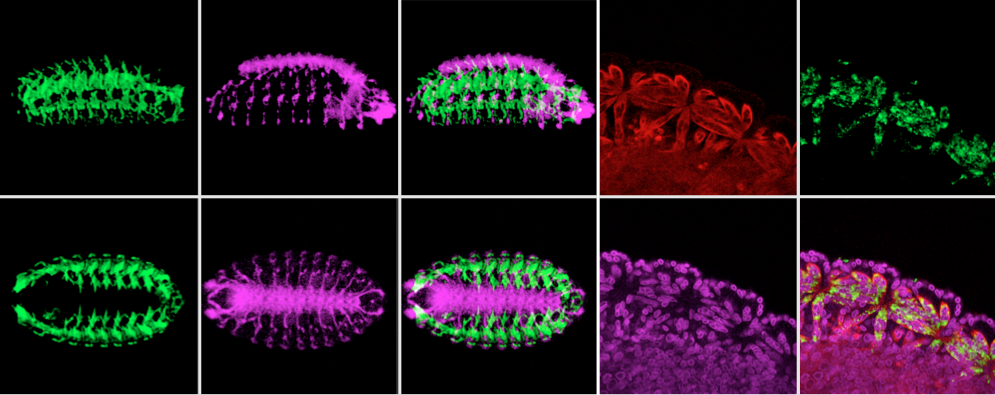

I recently worked on a long intergenic non-coding RNA (lincRNA) that may play a role in Drosophila muscle development. This gene starts to express from stage 13 of Drosophila embryo and its expression follows muscle pattern. It is located in cytoplasm. Furthermore, overexpression and knockdown of this gene lead to disruption of muscle pattern. I have also studied the possibility of this gene acting as miRNA sponge. Screening of its associated proteins is also going on.